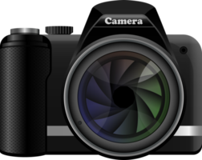

One of my hobbies is taking pictures. I really like to record every moment of life and share it with my friends so that they can also feel my happy moments or some beautiful moments. Some moments are temporary, but preserved in photos are forever.
Another hobby of mine is watching fireworks, which is also a hobby I like very much. Although fireworks are fleeting, the gorgeous light and shadow can remain in people's hearts forever. For a moment, and for eternity. Same reason as I like to take pictures.>